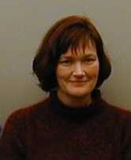

5th Symposium on Biological Data Visualization
10- 11 July // Dublin, Ireland @ ISMB/ECCB 2015
10- 11 July // Dublin, Ireland @ ISMB/ECCB 2015

Speakers
Keynote
Project MindScope
The Allen Institute for Brain Science has initiated a ten year project to study the principles by which information is encoded, transformed and represented in the mammalian cerebral cortex and related structures. The Institute will build a series of brain observatories to identify, record and intervene in the neuronal networks underlying visually guided behaviors in the mouse, including visual perception, decision making and consciousness. This is a large-scale, in-house team effort to synthesize genomic, anatomical, physiological and theoretical knowledge into a description of the wiring scheme of the cortex, at both the structural and the functional levels. I will describe the associated computational and informatics challenges. The fruits of this cerebroscope will be freely available to the public.
 |
Christof Koch, PhD Born in the American Midwest, Christof Koch grew up in Holland, Germany, Canada, and Morocco, where he graduated from the Lycèe Descartes. He studied Physics and Philosophy at the University of Tübingen in Germany and was awarded his Ph.D. in Biophysics in 1982. After four years at MIT, Dr. Koch joined Caltech in 1986, where he is the Lois and Victor Troendle Professor of Cognitive and Behavioral Biology. In 2011, he became the CSO of the Allen Institute of Brain Science in Seattle to lead a large scale, focused and high-throughout, ten year effort to understand coding in the visual neocortex. The author of more than three hundred scientific papers and journal articles, patents and books, Dr. Koch studies the biophysics of computation, and the neuronal basis of visual perception, attention, and consciousness. Together with Francis Crick, with whom he worked for 16 years, he is one of the pioneers of the neurobiological approach to consciousness. His latest book is Consciousness: Confessions of a Romantic Reductionist (MIT Press, 2012). |
Challenges Session
We have selected a range of speakers that, together with the keynote speaker, will cover developments in a broad range of active research topics in modern biological data visualization, from genes to proteins to organisms to populations. The speakers include developers of visualization tools widely used in biology, as well as active users who apply visualization methods to discover new biological knowledge.
Key Challenges with Genome & Population Data
As our ability to generate huge amounts of sequencing data continues to increase, data analysis is becoming the rate-limiting step in genomics studies. There are a number of graphical methods designed for the analysis of genome assemblies, genome browsing, comparative genomics, etc. Visualization tools facilitate analysis tasks by enabling researchers to explore, interpret, and manipulate their data. We will highlight new challenges in visualization that are not only a consequence of the sheer volume and complexity of genomic data, but also its increasing utility outside genomics research. Traditional genome visualization approaches do not meet the needs of emerging fields such as medical genomics and metagenomics, and new paradigms are needed.
|
Inna Dubchak, PhD Born in Moscow, Dr. Dubchak was awarded her Ph.D. in Physics with emphasis on Crystallography and Computational Methods by the Russian Academy of Sciences. In the 1990’s, during her postdoctoral training at the University of California in Berkeley, she quickly realized the potential of the emerging study of genomic data and switched to the fields of computational biology and bioinformatics. Since then, she has authored more than 100 academic articles and led a group that focuses on the analysis, organization, and visualization of large volumes of genomics information. Her team has developed a number of excellent visualization tools, including the VISTA family of programs for comparative genomics, which has become one of the major systems used by the biological community. The international popularity of the tools developed by Dr. Dubchak’s lab can be attributed to innovative features, exceptionally user-friendly and modern interfaces, and meticulous attention to biological details. |
Key Challenges with Visualising Macromolecules
This talk will give an overview of key challenges emerging in visualizing macromolecule structures, and especially in the representation, navigation and usage of data from high-throughput macromolecular dynamics simulations.
|  |
Valerie Daggett, PhD Valerie Daggett is Professor of Bioengineering, and Adjunct Professor of Biochemistry, Biomedical & Health Informatics at the University of Washington (Seattle, WA, USA). She holds a B.A. from Reed College and a Ph.D. from the University of California, San Francisco. Prior to her current appointment, she was a postdoctoral Fellow at Stanford University (1990-1993). Current Research Focus: "Our goal is to perform realistic molecular modeling studies relating to protein stability, function, and folding. Protein folding is one of the fundamental unsolved problems in molecular biology. A protein must assume a stable and precisely ordered conformation to perform its biological function properly. Although much is known of the structural details of the native folded conformation of proteins, very little is known about the actual folding process. An understanding of protein folding has important implications for all biological processes, including protein degradation, protein translocation, aging, and human diseases, including cancer and amyloid diseases. The solution to the protein folding problem also has applications in the human genome project and biotechnology. Given that protein folding is of such widespread importance to human health and the fact that experimental approaches only provide limited amounts of information on the structural transitions and interactions occurring during protein folding, we are using computer simulation methods in an attempt to delineate the important forces acting during this process. We have also become involved in biomaterial and biosensor design, making use of what we have learned in our structural, dynamics, and folding studies of well-studied globular proteins. Other areas of interest include: structural and dynamical consequences of amino acid mutations, hydrophobic hydration, force field and software development, and dynameomics. |
BioVis Publications
Proceedings 2011
Highlights 2011 (Open Access)
Deadlines
Paper Deadline
30 April 2012, 5 pm PDT
Poster Deadline
27 June 2012, 5 pm PDT
Contest Entry Deadline
11 July 2012, 5 pm PDT